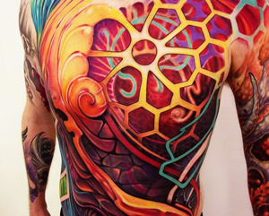
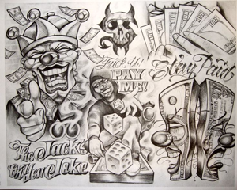
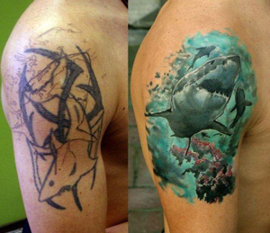
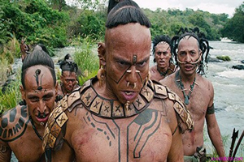
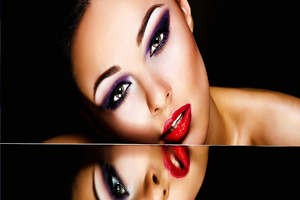

Художественная татуировка
Татуировка – одно из древнейших искусств. Она прошла с человеком сквозь тьму веков, не только не растеряв по пути своей значимости, но и сумев стать современным и актуальным искусством. Огромная энергетическая сила, скрывающая в себе древнейшие архетипы, сочетаясь с канонами классической живописи и последними техническими достижениями, создают поистине уникальное и единственное в своем роде искусство – художественную татуировку. В нашей студии мастера работают в разных стилях. Мы беремся за работы разного характера, будь то маленькая надпись или масштабная художественная работа. И делаем это одинаково хорошо! Эскиз для каждой работы мы разрабатываем индивидуально, что делает Вашу татуировку неповторимой.
Индивидуальные эскизы
В нашей студии вы можете получить бесплатную консультацию по выбору татуировки,а так же подобрать эскиз.Также наши мастера могут подготовить индивидуальный эскиз,с учетом пожеланий клиента . Для творческого человека искать индивидуальный образ, подходящий клиенту, творить что-то необычное — одно удовольствие. Ведь мастерам тоже интересно создать абсолютно новое тату, непохожее на другие.
Перекрытие (Cover-Up)
До начала 90-х годов техническое развитие тату-индустрии обходило нашу страну. По настоящему история отечественной татуировки началась лишь с падением железного занавеса. До этого момента мастера были весьма ограничены в средствах, и уж конечно не приходилось говорить ни о каких профессиональных тату-салонах – татуировка делалась кустарно, по сути, из подручных средств. Естественно, это отражалось на качестве. Подобное положение дел создало существенный барьер в восприятии татуировки, как сложного, качественного и дорого процесса. Многие до сих пор не понимают, зачем обращаться за татуировкой к профессионалу, когда есть знакомый «кольщик», который сделает «не хуже», да еще и дешевле. Мы пожинаем плоды этого непонимания до сих пор. Обычно с клиентами дешевых «кольщиков» мы встречаемся на сеансах перекрытия – так называемых Cover-Up. Суть их в том, что поверх старой татуировки наносится новая, которая полностью скрывает под собой старое изображение. Если же старая татуировка дорога Вам как память, но в силу ее качества смотреть на нее уже нет сил - Вы можете ее отреставрировать, обновить. В отличии от перекрытия он останется но Вашем теле, но будет выглядеть намного лучше - мы исправим недочеты и значительно ее "освежим", так что она будет выглядеть как новая!
Пирсинг
Пирсинг (англ. piercing — «прокол») — форма модификации тела, заключающаяся в проколе какой-либо его части. История этого украшения тела насчитывает десятки тысяч лет. На сегодняшний день сохранились многие формы: от экстремальных, исторически распространенных в некоторых частях света, до пирсинга мочек ушей, принятого в цивилизованном мире среди всех социальных слоев. Помимо татуировки, наша студия традиционно предлагает: пирсинг пупка, языка, носа, брови, губы, ушей, сосков, а также плоскостной и интимный. Наши мастера быстро, максимально безболезненно и в безопасных для вашего здоровья условиях сделают необходимые проколы, оставив для вас незабываемые и приятные впечатления.
Перманентный макияж
Среднестатистическая девушка ежедневно тратит на макияж примерно 30 минут. Наверняка можно было бы потратить это время на что-то более приятное, не так ли? В нашей студии Вы сможете довести свою красоту до идеала! Теперь Вы будете делать макияж исключительно ради удовольствия и только тогда, когда Вы сами этого захотите! Наши мастера помогут подобрать наиболее подходящий конкретно к Вашим чертам лица макияж, усилив достоинства или скрыв недостатки.